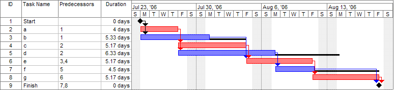

42889 iOS Application Development
41889 App Development in the iOS Environment
Lecture 9 - Project Management
UTS: Faculty of
Engineering and
Information Technology
UTS CRICOS Provider Code: 00099F
Software Project Management
The bulk of application development work consists of adding **features** and removing **bugs**. What is the difference between a feature and a bug?<br><br> **Features** are required by forces outside your control (customer needs, sales promises, business regulations). <!-- .element: class="fragment fade-up" --> **Bugs** are under your control, so you have a duty of care to address them in the current development cycle. <!-- .element: class="fragment fade-up" --> <br> Therefore: if the cost of addressing an issue is not feasible in the current cycle, it must be a missing feature instead of a lingering bug. <!-- .element: class="fragment fade-up" -->
Lifecycle of a feature
How to specify a feature - Risk of being too vague: building the wrong thing - Risk of being too specific: failure to solve the original problem User stories - "As a regular user, I need to be able to upload a profile picture." - "As a moderator, I need to remove inappropriate profile pictures." Do some features depend on other features? - Plan the project around that using [Gantt Charts](https://en.wikipedia.org/wiki/Gantt_chart). 
Lifecycle of a bug
1. Identify breakdowns, "funnies", or issues for investigation - When users say something is not working, they are usually right. - When they tell you how to fix it, they are usually wrong. 1. File the bug - A good bug report for a UI issue includes the action that was taken, the expected result, and the observed result. - A good bug report for a code issue includes a<br>[Short, Self-contained, Runnable Example](http://sscce.org/). 1. Implement a patch 1. Request that the patch be pulled into the master codebase - Verify that the patch fixes the original issue - Review the code - Accept the pull request
How to review code
- Good criticism is impersonal, specific, and actionable. - Personal culpability is a counterproductive concept - [It's about what broke, not who broke it](https://rachelbythebay.com/w/2018/03/27/whowhat/) – Rachel Kroll - [Exercises in Programming Style](https://www.crcpress.com/Exercises-in-Programming-Style/Lopes/p/book/9781482227376) - [The Architecture of Open Source Applications](http://aosabook.org/en/index.html) - [Write code that is easy to delete, not easy to extend.](https://programmingisterrible.com/post/139222674273/write-code-that-is-easy-to-delete-not-easy-to) – tef - Many different styles and patterns are effective. > I'm a huge proponent of designing your code around the data, rather than the other way around, and I think it's one of the reasons git has been fairly successful […] I will, in fact, claim that the difference between a bad programmer and a good one is whether he considers his code or his data structures more important. – Linus Torvalds
Software complexity
- Features are *Essential complexity*. - Bugs are *Incidental complexity*. – [No Silver Bullet](http://worrydream.com/refs/Brooks-NoSilverBullet.pdf), by Fred Brooks > **Complexity** is the degree to which a system or component has a design or implementation that is difficult to understand and verify. – The IEEE Standard Computer Dictionary - Not an absolute scale - Someone more familiar with the *theory* of a particular program can handle more complexity, therefore training helps - [Programming as Theory Building](http://pages.cs.wisc.edu/~remzi/Naur.pdf), by Peter Naur – [NASA Study on Flight Software Complexity](https://www.nasa.gov/pdf/418878main_FSWC_Final_Report.pdf)
[Cyclomatic Complexity](https://en.wikipedia.org/wiki/Cyclomatic_complexity) Verifying a program's behavior means verifying every possible code path. This liability can grow exponentially if code paths depend on shared mutable state (tight coupling).
**Reliable software is possible.** > Most programming environments are meta-engineered to make typical software easier to write. They should instead be meta-engineered to make *incorrect* software *harder* to write. – [Ten years of qmail 1.0](http://cr.yp.to/qmail/qmailsec-20071101.pdf), by Daniel J. Bernstein > The AXD301 has achieved 99.9999999% reliability. Why is this? No shared state, plus a sophisticated error recovery model. – [What's all this fuss about Erlang?](https://pragprog.com/articles/erlang/), by Joe Armstrong <!-- See also: [Making reliable distributed systems in the presence of software errors](http://erlang.org/download/armstrong_thesis_2003.pdf) --> ----- **Reliability is not emphasised by most business models.** - [Knight Capital Says Trading Glitch Cost It $440 Million](https://dealbook.nytimes.com/2012/08/02/knight-capital-says-trading-mishap-cost-it-440-million/) - [Sudden Unintended Acceleration](https://en.wikipedia.org/wiki/Sudden_unintended_acceleration) - [Therac-25](https://en.wikipedia.org/wiki/Therac-25)
Simplicity and Learnability
[Learnable Programming](http://worrydream.com/#!/LearnableProgramming), by Bret Victor [Mindstorms](http://worrydream.com/refs/Papert%20-%20Mindstorms%201st%20ed.pdf), by Semour Papert > If we wish to count lines of code, we should not regard them as "lines produced" but as "lines spent": the current conventional wisdom is so foolish as to book that count on the wrong side of the ledger. – [On the cruelty of really teaching computing science](https://www.cs.utexas.edu/~EWD/transcriptions/EWD10xx/EWD1036.html), by Edsger W. Dijkstra [The Design of Everyday Things](https://www.goodreads.com/book/show/840.The_Design_of_Everyday_Things), by Donald Norman [The Humane Interface](https://www.goodreads.com/book/show/344726.The_Humane_Interface), by Jef Raskin
feit.uts.edu